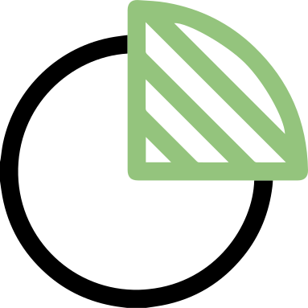
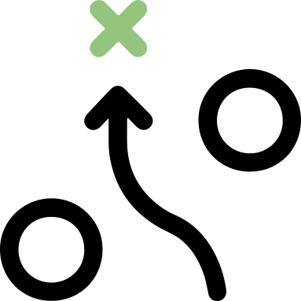
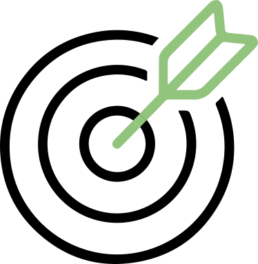
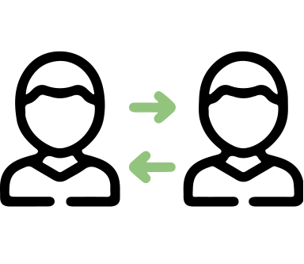
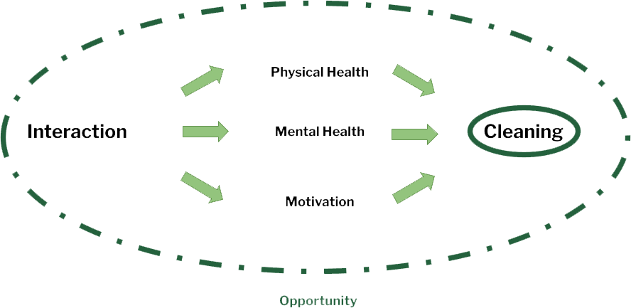
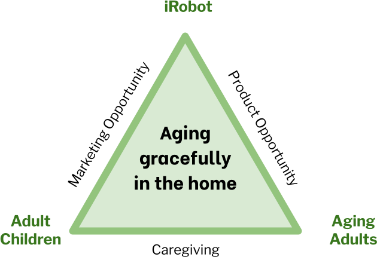
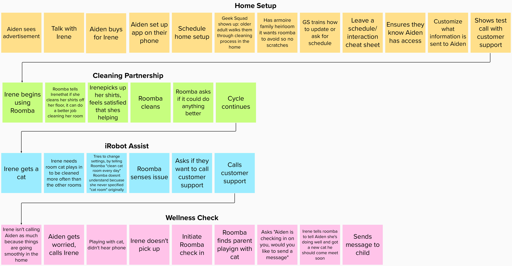
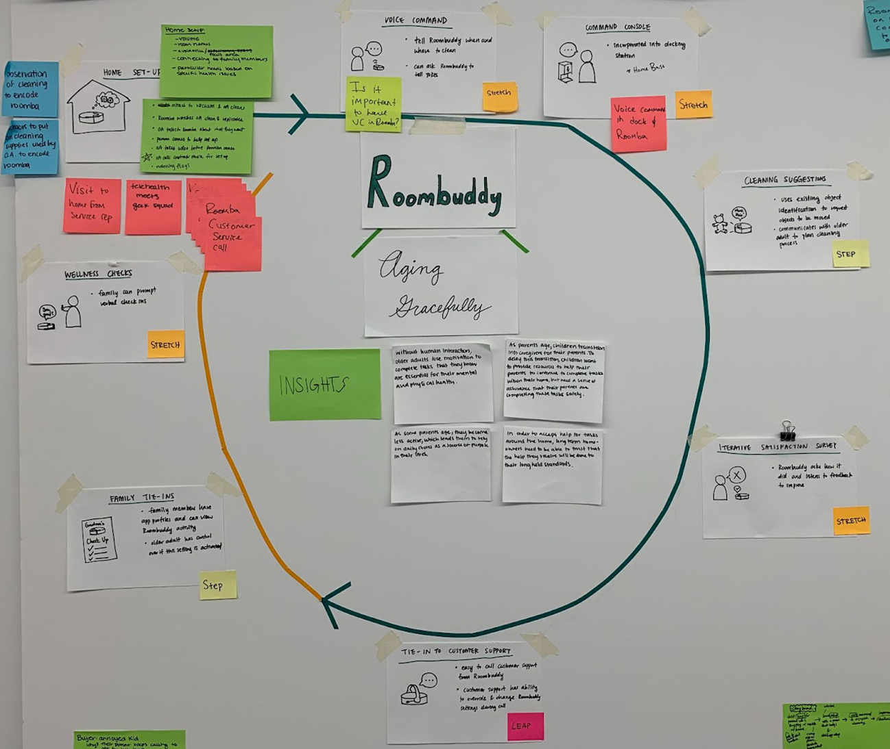

Problem
iRobot was interested in creating a thoughtful partner in people's homes, especially within the home health space. My team and I were charged with designing a new solution using iRobot product mobility to create value for users within home health.
Challenge: How might iRobot support the emerging needs of home health?
Process
For this project, iRobot introduced the company and their products, and also their work on the home health space. Using these information as our starting point, here's how we approached the challenge:
- Design Areas
- User Interviews
- Product Exploration
- Actionable Insights
- Framework Creation
- HMW Statements
- Concept Building
- Feature Categorization
- User Journey
- Product Journey
- Business Model
- Presentation
Research
Synthesize
Ideate & Design
Solution
Deliver
Completed the whole process within three months.
Research
Our research began by looking into areas within home health. One area that stood out to us was aging and we were interested in finding ways for aging adults to age gracefully in their homes using iRobot's products. So, we interviewed stakeholders within this space and find out what were the current solutions out in the market.
-

Design Areas
Analyzed areas within home health with the most potential for opportunity
User Interviews
Conducted 30 minutes sessions with 5 aging adults and children of aging adults
Product Exploration
Explored current solutions that support aging adults with their aging process
Synthesize
From our research, we gathered a lot of different important observations, ranging from the challenges that aging adults face in their homes to what adult children experienced with their parent's aging process. Here are the insights, frameworks and HMW statements that bring opportunities to life:
Insights
Trust & Acceptance
Long term homeowners only accept help that are done to their standards
Sense of Purpose
Daily chores give aging adults a sense of purpose and they don't want to give them up
Need for Interaction
Interactions motivate aging adults to complete tasks that are essential to their health

Family Dynamic
Children feel unsettled becoming the caregivers for their parents as they age
Framework Creation
We worked through different frameworks to visualize the importance of our insights and how they led to opportunities for iRobot.
-


Framework on interaction with cleaning and stakeholder relationships (L to R).
HMW Statements
How might we create a product that builds trust through customization to specific wants and needs?
How might we help adults with their household tasks without making them feel like they are losing their agency or sense of purpose?
How might we leverage human or synthesized interactions to help older adults complete essential tasks?
How might we provide children with assurance of their parents' well being without undermining their parents' independence?
Ideate & Design
Once we synthesized our findings, we began to formulate our solution. Since iRobot had built a strong foundation of technology and service for their products, we leveraged their resources as our starting point for concept building, feature categorization and user journey.
Concept Building
During this phase, we brainstormed about potential solutions to the four HMW statements. As we explored with different ideas, we identified the strongest concepts that could be weaved together to create a system that aligns with iRobot's goal for home health.


Brainstorming ideas with frameworks and HMWs in mind.
Concept System
Through telling the user journey, we organized how these concepts would interact as an entire concept system, and through feature categorization, we identified which concepts would serve as a step, stretch or leap for iRobot.
-


User journey and concept system (formerly called Roombuddy).
Solution
Our final concept keyed into our insights of trust & acceptance, sense of purpose, need for interaction and family dynamic by creating iRobot Connect. This concept system, built with multiple touchpoints, leverages current capabilities with strategic partnerships that enable a new disruptive business model.
Product Journey
We created a product journey to show how iRobot Connect is used over various touchpoints in the user journey, including Home Setup, Cleaning Partnership, iRobot Assist and Wellness Check.

Simplified version of the full product journey.
Business Model
Before handing off our system to iRobot, we used this business model framework to demonstrate the rationale of how iRobot will create, deliver and capture value.

Business model of iRobot Connect.
Conclusion
iRobot Connect was received with positive feedback, with praise on our ability to articulate our research and ideas. iRobot will take our deliverables into developing their next steps, so we're very excited to see where our concept goes in the future. Working with my team and instructors, I was able to better formulate insights that guide my ability to ideate. A final takeaway from this project would be exploring more disruptive human-centered solutions regardless of iRobot's current capabilities.